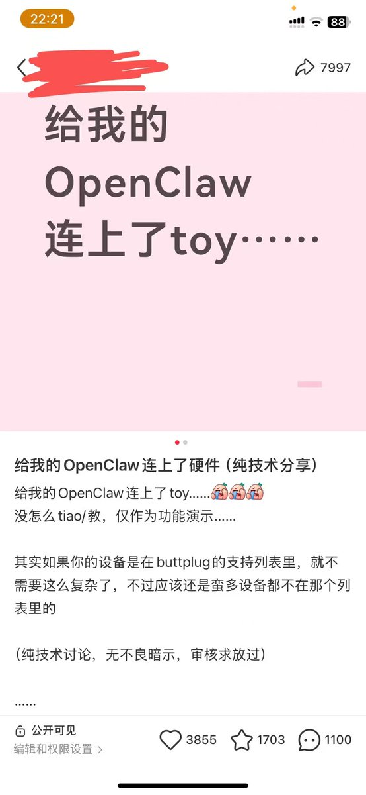

Wilf Lin
@Wilf_Lin
@yiliuai 支持远控的，直接把链接发过去，好的模型可以直接给页面逆向了

Criska
@yiliuai
一两个月前我因为在小🍠上发布了用 OpenClaw 和 Claude 连接了女生小玩具（vibrator）而走红了一两篇🍠内容。
然后我就拉了一个仅限女生的群。结果那个群老是有一些男的要装女的进群，受不了了
我的进群问题都问了你是女生吗...有的人真是脸皮比城墙还厚，什么心理啊这是...已无语凝噎 https://t.co/6kKatuvd8F